Click the image to enlarge.
Click the image to enlarge.
|
|
Joseph Henderson | |
|
Captain Joseph Henderson was born in Charleston, South Carolina, on September 9, 1826. He was a notable Sandy Hook pilot in New York Harbor and along the Atlantic coast during the Civil War. View this Wikipedia article about Joseph Henderson. View his FamilySearch.org profile. Learn more about him in The Henderson Family and the California Perfume Company by Gregory F. Henderson. profile. |
|
| Important Facts | |
| September 9, 1826 | Joseph Henderson was born in Charleston, South Carolina. According to the 1880 US Federal Census, Joseph's father and mother were both born in South Carolina. Source: 1865 New York State Census, 1878 U.S. Passport Application, 1880 US Federal Census. | ||
| The silver spoon on the right, is believed to have belonged to Joseph Henderson. The spoon has been passed down as a family heirloom. The inscription on the back reads "Wm Carrington & Co." In 1830 William Carrington arrived in Charleston, South Carolina. Around 1838 he founded his own firm, W. Carrington & Co., which remained independent until 1872. |

|
||
| Joseph lost one or both of his parents while he was still a child and was taken in by an uncle, whom he later described as harsh and unkind. Source: Jerry Henderson, So Long, It's been good to Know You, page 1. | |||
| 1842 | At the age of sixteen, Joseph Henderson left Charleston, South Carolina, and secured passage aboard a ship bound for New York, working as a cabin boy during the voyage. Source: Jerry Henderson, So Long, It's been good to Know You, page.1. | ||
| 1845 | The New York Herald later recalled Henderson’s early career, noting that “some men on South Street remember him in 1845 as a pilot of some standing even then.” Source: “Half a Century of Piloting,” New York Herald, October 12, 1890. | ||
| 1846 | Joseph was listed in Doggett’s New-York City Directory as “Henderson Joseph, mariner, 325 Front Street, New York City.” Source: Doggett’s New-York City Directory, p. 184. | ||
| 1846 | At the age of twenty, Joseph received his first pilot’s license and soon became skilled in all aspects of piloting. Source: Charles Edward Russell, From Sandy Hook to 62° (1929), p. 148. | ||
| Fall 1847 | At the age of twenty-one, Joseph was captain of his own schooner and was working as a New York Sandy Hook pilot. Source: United States Court of Commissioners of Alabama Claims, Records of the Court of Commissioners of Alabama Claims (1882–1885), vol. 21, Google Books. | ||
| February 11, 1849 | On Sunday evening, the Rev. Edward Lathrop married Joseph Henderson and sixteen-year-old Angelina Annetta Weaver at the Baptist Tabernacle Church on Mulberry Street, near Chatham Square, in New York City. Their marriage was announced in the New York Herald. Interestingly, Rev. Lathrop was from Beaufort, South Carolina, near the region where Joseph was born and spent his early childhood. Source: Marriage announcement, New York Herald, February 13, 1849, p. 4. |

|
|
| 1849-1850 | At the age of 23, Joseph was listed as a Pilot living at 93 Roosevelt Avenue in New York City. Source: John Doggett, Jr. & Company, New York City Directory for the 1849-1850 edition. |
|
1848 | Joseph Henderson was listed as a seaman residing at 325 Front Street. Angelina’s half-brother, Maurice D. Weaver, was listed as a pilot at 309 Water Street, with his residence at 93 Roosevelt Street. Source: Doggett’s New York City Directory, 1848. |
| May 12, 1850 | Angelina and Joseph’s first child, a daughter named Sarah Rebecca Henderson, was born in New York City. According to Doggett’s New-York City Directory, the family was living at 93 Roosevelt Street. Source: 1850 U.S. Federal Census; Doggett’s New-York City Directory. | ||
| October 15, 1850 | The 1850 U.S. Federal Census lists Joseph Henderson, age 23, working as a pilot and living in New York City with his wife, Angelina A., age 18, and their five-month-old daughter, Sarah R. Henderson. Morris D. Weaver, age 28, was also listed as a pilot living in the same ward. Source: 1850 U.S. Federal Census, New York City, Ward 4; Microfilm Roll M432, Roll 536; p. 278; Image 558. | ||
| 1852 | Joseph was listed as a “pilot” residing at 90 Roosevelt Street in New York City. Roosevelt Street was located in Manhattan and ran southeast from Pearl Street to South Street. Source: New York City Directory, 1852, p. 244. | ||
| 1852 |
Maurice D. Henderson was born in New York City. Source: 1855 and 1860 U.S. Census records. |

|
|
| 1853 | Joseph was listed at 69 South Street in New York City, while his residence was in Brooklyn. The address at 69 South Street was the office of the Board of Commissioners of Pilots. Source: Mary Anthony Lathrop, Mary’s Family Connections (1979), p. 99. | ||
| May 16, 1853 | Joseph Henderson was listed as one of the pilots and owners of the pilot boat Elwood Walter, No. 7, which belonged to the Merchant Pilot Association. The vessel was named in honor of Elwood Walter, president of the Mercantile Insurance Company, and was built by Edward T. Williams of Green Point, Brooklyn. Source: The New York Times, ProQuest Historical Newspapers, p. 3. | ||
| September 13, 1853 | Joseph Henderson was granted his license as a branch pilot on the pilot boat Elwood Walter. Source: Board of Commissioners of Pilots of the State of New York. |

|
|
| 1854 | Joseph and his family moved to Franklin Avenue between Willoughby and DeKalb Avenues in New York. Source: Mary Anthony Lathrop, Mary's Family Connections, 1979, pg. 100. | ||
| 1854 | Joseph Henderson Jr. was born in Brooklyn, New York. He later married Minnie E. Duryea on January 6, 1876 in Brooklyn, New York. Source: Mary Anthony Lathrop, Mary's Family Connections, 1979, pg. 90. |
|
|
| June 14, 1855 | The 1855 New York State Census lists Joseph Henderson, age 28, living in Ward 7 of Brooklyn, Kings County, New York, with his wife, Angelina A., age 22, and their children Sarah R., age 5; Morris, age 4; and Joseph, age 2. Also living in the household was Elizabeth McGrath, a 14-year-old servant from Ireland. Source: New York State Census, 1855, FamilySearch, accessed October 4, 2013. | ||
| December 17, 1856 | Joseph Henderson was listed as being a captain for the pilot boat, the George W. Blunt, No. 11. It was on this ship that he was said to have fallen from the masthead. Source: New York Daily Times. | ||
| January 21, 1857 | Joseph Henderson was listed as being on the George W. Blunt, No. 11 anchored at Coney Island, hemmed in by the ice. A snowstorm was reported in Brooklyn and there were reports of shipwrecks on the cost and loss of life due to the winter storm. Source: New York Herald (New York, NY) Page: 1. | ||
| March 25, 1959 | Joseph and his family attended the Free Church of St. Matthew’s on Throop Avenue in Brooklyn’s Ninth Ward. The church was organized as a parish in 1859. A Gothic-style frame church was later constructed, measuring forty-five by eighty feet, with a twelve-foot-square bell tower and a spire rising 130 feet. The church could accommodate approximately 450 people. Source: The Free Church of St. Matthew’s, founded in 1859. | ||
| 1859 | The Henderson family moved a few blocks East, to 983 Myrtle Avenue, at the corner of Throop Avenue in Brooklyn, New York. He was listed as: "Henderson, Jos. pilot, 69 South, h. Myrtle av. B'klyn. Source: New York City, New York 1859 City Directory - H. |
|
|
| 1859-1860 | Joseph was listed in the Brooklyn city directory as “Jos. Henderson, pilot, h. Myrtle av. c. Throop,” indicating that his residence was at the corner of Myrtle and Throop Avenues. Source: Hearne’s 1859–60 Brooklyn City Directory. | ||
| July 12, 1860 | The 1860 U.S. Federal Census lists Sarah, age 10; Morris, age 8; and Joseph, age 6. Also living in the household was Cathe Ross, a 21-year-old servant. Source: 1860 U.S. Federal Census, 9th Ward, District 1, Brooklyn, Kings County, New York; Roll M653_768; p. 599. | ||
| 1860 | Mary Ann Henderson was born in Brooklyn, New York. She later married Charles S. Hendrickson in Brooklyn, New York. He was a wholesale fruit broker in downtown New York. Source: 1865 NY State Census, Ward Nine of Brooklyn, in the county of Kings, NY. |

|
|
| February 1861 | An amalgam bell was presented to St. Matthew’s Church by the New York pilots at Sandy Hook, while other furnishings were donated by friends and members of the congregation. Source: The Free Church of St. Matthew’s, founded in 1859. | ||
| April 12, 1861 | The American Civil War broke out between the northern and southern states. | ||
| October 15, 1861 | Joseph Henderson served as a pilot aboard the transport Arago during the Civil War. The vessel departed Eastport, Maine, and proceeded to the New York Navy Yard in Brooklyn, where it received weapons and supplies. The Arago then joined the naval expedition to capture Port Royal, South Carolina. The successful capture of Port Royal provided the South Atlantic Blockading Squadron with an important base of operations for the remainder of the war. Source: The Evening World, October 8, 1890, Extra 2 O’Clock edition. | ||
| The Arago was a schooner transferred to the Union Navy from the United States Coast Survey during the Civil War. The vessel was outfitted as a gunboat and served as a picket and patrol vessel in Confederate waters. Source: “USC&GS Arago (1854),” Wikipedia, accessed May 5, 2016. | |||
| 1862 | During the Civil War, Joseph served as a pilot for the Federal Government in Southern waters. His service was considered so valuable that he received not only the government’s thanks but also an unusually generous financial reward. Source: Charles Edward Russell, From Sandy Hook to 62° (New York: The Century Co.), pp. 148–153. | ||
| January 7, 1862 | Joseph Henderson purchased a cemetery plot for his nephew, Maurice D. Weaver, which became the Henderson family plot; Lot 13244 section 88 at the Green-Wood Cemetery. Source: The Green-Wood Cemetery Catalog of Heirs 2993. |
|
|
| 1862 | Joseph Henderson was listed in the 1862–63 Brooklyn City Directory as “HENDERSON, J., pilot.” Source: Brooklyn City Directory, 1862–63, p. 189. | ||
| January 1863 | Angelina A. Henderson was born in Brooklyn, New York. She later married Frederick Wilcox on November 24, 1880, and died at a relatively young age from tuberculosis. Source: 1865 New York State Census, Ward Nine, Brooklyn, Kings County, New York. |
|
|
| May 1863 | Joseph Henderson was listed in the federal tax assessment records at his residence at Myrtle and Throop Avenues in Brooklyn. He was assessed a 3 percent income tax totaling $58.50. Source: U.S. IRS Tax Assessment Lists, 1863–1864, New York, District 2. | ||
| 1863-64 | The pilot boat William Bell, No. 24 was built at Greenpoint, Long Island, New York, by Edward F. Williams for Joseph Henderson, William Anderson, John Van Dusen, and James Callahan. The vessel measured approximately 118 tons and cost about $16,000 to build. Source: United States Court of Commissioners of Alabama Claims, Records of the Court of Commissioners of Alabama Claims (1882–1885), vol. 21, Google Books. | ||
| September 29, 1864 |
During the Civil War, the pilot boat William Bell, No. 24 ventured too far out to sea and was captured and burned by the Confederate raiding steamer Tallahassee.
On June 5, 1883, Joseph Henderson received $6,170.31 in compensation for the loss of the William Bell, in which he owned a 5/16 share. Sources: “The Tallahassee: Complete Rebel History of Her Depredations,” The New York Times, p. 1; “The William Bell: A New York Pilot Boat,” The Log of Mystic Seaport (1969), p. 17. |
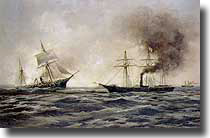 |
|
| 1864-1865 | Joseph Henderson is listed in the Brooklyn city directory as HENDERSON, Joseph, pilot, h. Myrtle Ave n. Throop. Source: 1864-65 Brooklyn City Directory page 186. | ||
| April 9, 1865 | The Civil War ended - Confederate General Lee surrendered to Union General Grant. | ||
| May 1865 | Joseph Henderson is listed as owning a piano and watch at his residence on Myrtle and Throop. The total tax was for 5 dollars. Source: U.S. IRS Tax Assessment Lists, 1862-1918, New York, District 2; 1865. | ||
| February 28, 1865 | Alexander Dawson Henderson Sr.. was born at 983 Myrtle Street and Throop Avenue in Brooklyn, New York. Source: Mary Anthony Lathrop, Mary's Family Connections, 1979, pg. 86. |
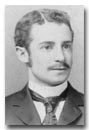 |
|
| June 10, 1865 | The 1865 New York State Census lists Joseph Henderson, age 40, living with his wife, Angelina, age 32, and their children: Sarah, 15; Maurice, 13; Joseph, 11; Mary, 5; Angelina, 2; and Hannah (Alexander) Henderson, four months old. Joseph’s birthplace was recorded as Charleston, South Carolina. Source: 1865 New York State Census, Ward Nine, Brooklyn, Kings County, New York. | ||
| November 3, 1867 | Henderson was listed as one of the New York Sandy Hook pilots in the New York Herald in the article titled "Sandy Hook Pilots". The article talks about the duties, names of pilots and boats, rates of piloting, penalties and rewards, and the dangers encountered. The article goes on to say that pilots make from $1,000 to $2,000 per year. Source: New York Herald, Page 8. | ||
| 1867 | Joseph made a small fortune through investments and had various savings accounts in Brooklyn and New York banks. Source: Mary Anthony Lathrop, Mary's Family Connections, 1979, pg. 88. | ||
| March 6, 1867 | The pilot boat William Bell, No. 24, lay a mile inside of the outer bar, full of water. She was a new boat built in 1865 and part owned by Captain Joseph Henderson 5/16th. The vessel was reported as a total loss. Source: The New York Times, page 8, New York Herald, page 7; and the New York Evening Express, page 1. | ||
| March 16, 1867 | There was a hearing to a committee of ship owners that were asking for a repeal or modification of the 28th By-law of the Board of Pilot Commissioners. Pilot Henderson opposed any change in the existing regulations. “Mr. Henderson claiming that a pilot who had, in the discharge of his duty, by going far out to sea to board a ship, was entitled to the privilege of taking her again out, instead of her being taken out by some velvet-footed stay-at-home, who might be a favorite and pet of the owner.” | ||
| 1869 | Joseph was listed in the New York City Directory as Henderson Joseph, pilot, 40 Burling sl. h Myrtle av. c Throop av. B'klyn. Source: New York City Directory, 1869. | ||
| December, 1869 |
Pilot Joseph Henderson offered his services
to the master and owners, to pilot a steam vessel |
||
| February 16, 1870 | Because of the above incident with the vessel Tybee, a judgment wad made in the district court of New York City in favor of Joseph Henderson for thirty-eight dollars and eighteen cents, besides costs for fees for pilotage. Source: Court of Common Pleas of the City and County of New York, Joseph Henderson v. Paul N. Spofford and Others, page 361. | ||
| July 26, 1870 | The 1870 U.S. Federal Census lists Joseph Henderson, age 46, a pilot born in South Carolina, living in Brooklyn with his wife, Angelina, age 38, and their six children: Sarah R., 20; Morris D., 18; Joseph Jr., 16; Mary Ann, 10; Angelina A., 8; and Alexander D., 6. Also living in the household was Mary Mooney, a 25-year-old servant born in Ireland. At the time, Brooklyn had a population of approximately 396,000. Source: 1870 U.S. Federal Census, 21st Ward, Brooklyn, Kings County, New York; Series M593, Roll 961, Part 1, p. 349A. | ||
| 1871 | The above judgment with the owners of the vessel Tybee, was appealed in the case HENDERSON against SPOFFORD but the judgment was affirmed. Source: Reports of Practice Cases, determined in the Court of the state of New York. | ||
| May 1, 1872 | The New York City Directory, listed as "Henderson Joseph, pilot, 75 South, h B'klyn. Source: New York City Directory, Compiled by H. Wilson. | ||
| October 28, 1872 | At 5 PM the brig Emily was sighted by Capt. Henderson of the New York pilot boat Pet, No 9. The crew came on board the pilot boat, which lay by the brig until 7 PM, at witch time the Emily capsized. It was not until the next day that the crew members were transferred to the steamship Italy, from Liverpool and brought to the port. Source: New York Herald, Oct. 31, 1872, page 10. | ||
| November 5, 1872 |
Joseph Henderson spoke at a meeting of the Board of
Commissioners of Pilots about how he and his boat Pet, No. 9, rescued the crew of the brig Emily. Joseph said: “Gentlemen: I respectfully report
that on Monday Oct. 28, Block Island bearing north, forty
miles distant, the pilot-boat Pet, No. 9, it blowing a gale of wind east by north-east, fell in with the bring Emily, from Jacksonville, bound to Boston, in a sinking condition, colors flying union down: went to her and spoke her; the master wished to abandon the vessel as the sea was making a clean breach over her and she could not float much longer.” Joseph goes on to describe the condition of the boat and getting the crew and officers safely on board the Pet. His effort was acknowledged in a resolution, which granted that a reward be paid to the pilots for a sum of $250. Source: Nov. 5, 1872; ProQuest Historical Newspapers The New York Times, pg. 2. |
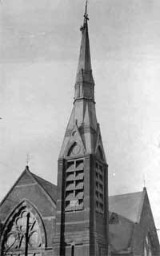 |
|
| April 24, 1874 | The County Court of Kings County filed a pursuance of judgment of foreclosure and sale of part or portion of a large piece of ground which Joseph Henderson and Angelina A. Henderson conveyed unto George A. Wilhelm, his heirs and assigns. Source: Brooklyn Daily Eagle, pg. 4, May 13, 1874. | ||
| 1874-1875 | Joseph was listed in the Brooklyn City Directory as "Henderson Joseph pilot, 309 Water, N. Y. h 983 Myrtle av" Source: 1874-75 Brooklyn City Directory. | ||
| 1877 | Joseph was listed in the New York City Directory as: Henderson,Joseph, pilot, h 983 Myrtle av. Source: New York City Directory, 1877. | ||
| February 3, 1877 | Joseph Henderson was listed in an article for the Spirit Of The Times newspaper about the pilot-boat PET, which was number nine of the New York Harbor fleet. The article said "This week, in connection with a picture of the pilot-boat Pet and Captain Joseph Henderson, we give a brief sketch, the object of which is to explain how the business of these craft is conducted in the port of New York. Source: New York Spirit Of Times 1877 Jan-Dec. |
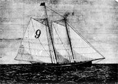 Pilot-boat PET Number Nine of the New York Harbor Fleet |
|
| June 17, 1878 | Joseph was issued a U.S. passport to travel to Great Britain and Europe with his wife, Angelina, age 46, and their daughter Mary Ann, age 18. His passport application described Joseph as 52 years old, 5 feet 3 inches tall, with gray hair and gray eyes. His birthplace was recorded as Charleston, South Carolina. Source: U.S. Passport Applications, 1795–1925. | ||
| November 9, 1878 |
Mr. Joseph Henderson, Sandy Hook pilot of boat |
| | |
| 1878 | Joseph is listed as "Henderson Joseph pilot h 983 Myrtle av." in the Brooklyn directory. Source: 1878-79 Brooklyn City Directory. | ||
| March 22, 1879 |
The New York Times had the following article about the Brooklyn Bridge:
THE OBSTACLES TO TBE BRIDGE VIEWS OF NEWYORKEERS—ITS SUPPOSED SHAKINESS-THE REGULATION OF PASSENGER TRAFFIC There were glances of admiration bestowed by the inland members of the committee upon Capt. Joe Henderson, one of the oldest pilots around New-York, whenthat mariner reeled off a lot of nautical terms in his testimony. Even the Chairman, who has learned among many other things that there is no difference in the height of masts at low or high water, a point which he has persisted in raising several times, and which has always been settled as a joke at his expense—listened intently. The pilot described the increased difficulties in navigating the East River within the last quarter of a century, not the least of which is thebridge. Source: The New York Times, March 22, 1879. | ||
| June 12, 1879 | Mrs. Joseph Henderson was on the committee in charge of a strawberry church festival that was given in the Sunday School room of the St. Matthew's P. E. Church on Throop Avenue. Source: Brooklyn Daily Eagle, pg. 3. | ||
| 1879-80 | Joseph is listed as "HENDERSON Joseph pilot h 981 Myrtle av." in the Brooklyn directory. Source: LAIN'S 1878-80 BROOKLYN DIRECTORY. | ||
| June 4, 1880 |
The 1880 U.S. Census lists the entire Henderson family:
Joseph (52) and Angelina A. (48) living at home with their three daughters, Sarah R. (30), Mary A. (20),
Angelina A. (18), and three sons, Morris (28), Joseph (26), Alexander (15), and Barbara Stroller (20 - servant). Joseph Sr. was listed as "Pilot".
Maurice was listed as sailmaker, Joseph Jr. as broker, and Alexander at school. The census lists 'South Carolina' as the birth place of both his father and mother. Angelina's father's birth place is listed as Italy.Source: 1880 US Federal Census for 983 Myrtle Ave., Kings (Brooklyn), New York City-Greater, New York. |
||
| 1880 | Henderson is listed as a passenger (age 54) on the ship Devonia arriving in New York City in 1880. Source: New York Passenger Lists, 1820-1891. | ||
| September 27, 1880 | Henderson is listed with the New York pilot boat Pet No. 9 for ships arriving in the American Ports. Source: New York Herald, page 10. | ||
| 1881 | The Henderson family took up residence at 633 Willoughby Avenue in Brooklyn, New York. See map on right. |
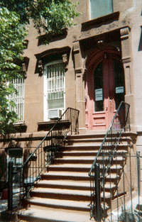 |
|
| January 6, 1881 | The New York pilot boat Pet No 9 and Joseph Henderson arrived at the port of Newport, Rhode Island. They put in for pilots and sailed back to the New York port. Source: New York Herald, page 10. | ||
| February 16, 1881 | Joseph Henderson was listed in an article titled "Guardians of the Harbor". From a regular meeting of the Board of Pilot Commissioners, Pilot Henderson was granted permission to go to Boston on the steamer SS Otranto. Source: The New York Herald. | ||
| 1881-1882 | Joseph is listed as "HENDERSON Joseph, pilot, 69 South N.Y. h 633 Willoughby av." in the Brooklyn directory. Source: 1881-82 BROOKLYN DIRECTORY | ||
| 1882-84 | Joseph is listed as "HENDERSON Joseph, pilot, h 633 Willoughby av." in the Brooklyn directory. Source: 1882-84 BROOKLYN CITY DIRECTORY. | ||
| 1876-1885 | The pilot boat schooner Pet, No. 9 was registered to Joseph Henderson from 1876 to 1885. The pilot boat was built in Charleston, Massachusetts in 1867. The Pet was 54-tons and was steered by means of a tiller. Source: Record of American and Foreign Shipping, 1881, Mystic Seaport Museum. |
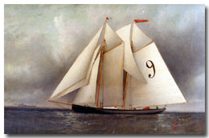 |
|
| January 23, 1883 | The Brooklyn Eagle listed real estate transfers from a Martin H. Duane to Angelina A, wife of Joseph Henderson for property on Willoughby Ave for $8,100. Source: Real estate transfers, August 23, 1883, The Brooklyn Daily Eagle, page 3 (left-side). | ||
| February 17, 1883 | Joseph Henderson, John Van Dusen, William Anderson, and James Callahan petitioned the United States for compensation of their loss. On June 5, 1883, Henderson was compensated for $6,170.31, as he owned 5/16 shares in the William Bell. Source: The Court Of Commissioners of Alabama Claims, February 10, 1883. | ||
| May 24, 1883 | The Brooklyn Bridge was opened to traffic on May 24, 1883. The Bridge Toll was 3 cents. Before the bridge was constructed you had to take a ferry between Brooklyn and Manhattan. Joseph was called upon as an expert seaman to determine the height of the water span of the Brooklyn Bridge. Source: The Brooklyn Daily Eagle, October 9, 1890, pg 1. |
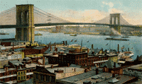 |
|
| 1884-1886 | Joseph was listed in the New York City Directory as: Henderson Joseph, pilot, h 633 Wil'by av. Source: New York City Directory, 1884-1886. | ||
| Tuesday, June 16, 1885 | Now 10 miles off the Sandy Hook lightship, a pilot boat ran close under the bows of an odd-looking, bark-rigged propeller. The New York Times read: "Liberty, Ahoy!". Pilot Henderson was quoted as saying: "She's got that big Liberty aboard." Source: The New York Times. | ||
| Wednesday, June 17, 1885 | The Evening Telegram published a front-page article titled “THE ISERE—Bartholdi’s Gift Reaches the Horseshoe Safely.” The article reported that Pilot Boat No. 9 encountered the French transport ship Isère at ten o’clock the previous night. Joseph Henderson boarded the vessel as pilot but determined that it was too dark to cross the bar safely. He took charge of the Isère and remained offshore until daylight, when the vessel could proceed safely into the harbor. The Isère was transporting the Statue of Liberty from France to the United States. Source: The Evening Telegram. | ||
| Thursday, June 18, 1885 | The New York Tribune, in an article titled “ARRIVAL OF THE BIG STATUE—THE ISERE ANCHORED DOWN THE BAY,” reported that Pilot Boat No. 9 encountered the French transport ship Isère on Tuesday, and Pilot Joseph Henderson was taken aboard to guide the vessel into New York Harbor. When they reached the bar around midnight, conditions were foggy, rainy, and dark. Henderson determined that it was safer to wait until daylight before attempting the crossing. The following morning, he guided the Isère safely across the bar and to her anchorage. The vessel was carrying the Statue of Liberty from France to the United States. Source: “Arrival of the Big Statue—The Isere Anchored Down the Bay,” New York Tribune. | ||
| Saturday, June 20, 1885 | The New York Times featured a front-page article titled “WELCOMING THE STATUE—A BRILLIANT SCENE ON THE WATERS OF THE HARBOR,” describing the arrival of the Statue of Liberty in New York. Joseph Henderson had been selected to pilot the French transport ship Isère, carrying the Statue of Liberty, safely into New York Harbor and toward Bedloe’s Island. The newspaper even noted Henderson’s appearance aboard the vessel, describing “Old Pilot Henderson, who jumped from the skylight down on the quarter deck of the Isère.” Source: “Welcoming the Statue—A Brilliant Scene on the Waters of the Harbor,” The New York Times, p. 1, ProQuest Historical Newspapers. |
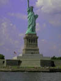 |
|
| 1886-1888 | Joseph was listed in the New York City Directory as: Henderson Joseph, pilot, h 633 Wil'by av. Source: Lain's Brooklyn Directory For The Year Ending May 1st, 1888, Lain & Company, 17 Willoughby Street, Brooklyn. | ||
| April 11, 1887 | Joseph drafted his Will on April 11th, leaving his entire estate to his wife, Angelina and his six children Maurice, Joseph, Alexander, Sarah, Mary Ann, and Angelina. In case he survived his wife, Joseph appointed the Brooklyn Trust Company as executor. Source: Joseph's Will from the Surrogate Court, Kings County, New York. His estate was valued around $100,000.00Source: Mary Anthony Lathrop, Mary's Family Connections, 1979, pg. 88. |
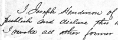 |
|
| May 8, 1887 | On Saturday afternoon, May 7, 1887, the steamer Martello left her dock in Jersey City laded with merchandise, bound for Hull, England. The weather was foggy. On Sunday, May 8, 1887, the Martello left Gravesend Bay and started for se in command of Captain Francisco E. Jenkins, and Pilot Joseph Henderson. The vessel proceeded down the swash channel and through Gedney's channel. The vessel's engines were stopped and Pilot Henderson was discharged 40 minutes before hearing the horn of the sailing vessel Freda A. Willey. The two ships collided about 1 3/4 miles from the Sandy Hook lightship. As a result of this incident, Henderson was listed in a U.S. Supreme Court libel for a collision between the American barkentine Freda A. Willey and the British steamship Martello. The suit said "Pilot Henderson has been a New York and Sandy Hook pilot for nearly forty-two years." The Freda A. Willey was free from fault. The Martello was at fault for too great speed. Appeal from the court was argued on March 15, 16, 1894 and decided on April 16, 1894. Source: THE MARTELLO v. THE WILLEY, 153 U.S. 64 (1894). |

|
|
| 1888 | He was on board the America pilot-boat during the great blizzard of 1888, when the vessel rode out the storm off Shinnecock Light. The Shinnecock Light was an important lighthouse on the south side of Long Island, New York. Source: The New York Herald. | ||
| November 29, 1888 | A newspaper account titled: "Overdue Vessels Come In. Rough Weather Reported by all. Few, Of Them Seriously Damaged", which talks about not hearing from the pilot-boat Pet. no. 9. She had left port twelve days ago, and when last heard from was 300 miles east of Sandy Hook. She had a crew of six men and Joseph Henderson was in charge. Source: New York Herald-Tribune (New York, NY) Page 3. | ||
| March 19, 1889 | Pilot Henderson, from the pilot-boat Pet, went aboard the British steamship Wingates to safely tow it to the Sandy Hook port. The steamship broke her shaft by the heavy seas off the east end of Long Island. Source: New York Herald-Tribune (New York, NY) Page: 4. | ||
| November 21, 1889 | Joseph was commander of the pilot boat Pet, No. 9, which was lost in Newport, RI, harbor. "She dragged her anchor near Mackerel Cove, Rhode Island and drove ashore, proving a total loss. The agile Henderson escaped with his life." Source: Charles Edward Russell, "From Sandy Hook to 62°", page 151; The New York Times, page 3; The Brooklyn Eagle. |

|
|
| 1890 | Joseph was listed in the New York City Directory as: Henderson Joseph, pilot, 40 Burling sl. h 633 Willoughby av. B'klyn. Source: New York City Directory, 1890. | ||
| August 13, 1890 | Joseph took the White Line passenger steamer Teutonic to sea on her first westward race across the Atlantic with the steamship liner City of New York. The race ended in victory for the Teutonic. The race from Queenstown harbor to Sandy Hook, took 5 days, nineteen hours. The Teutonic was a 9,984 gross ton ship, built in 1889 by Harland & Wolff, Belfast for the White Star Line. Source: The Evening Post, New York. |
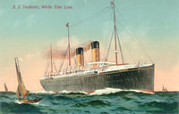 |
|
| August 21, 1890 | Joseph was listed as the pilot on the liner SS Teutonic racing against the SS City of New York. Source: The New York Herald. | ||
| August 23, 1890 | Joseph piloted the USS Baltimore to the ocean with the remains of Captain John Ericsson for the funeral in Stockholm on September 14. Ericsson was regarded as one of the most influential mechanical engineers and inventor. Source: The Evening Post, New York. |
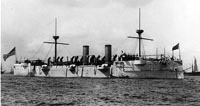 |
|
| October 4, 1890 | On Saturday, Joseph left home in good health and sailed for Sandy Hook aboard his pilot boat, American, No. 21. While away, he became seriously ill and was brought back to his home in New York. Source: Brooklyn Daily Eagle, October 9, 1890, Vol. 50, No. 280, p. 1. | ||
| October 7, 1890 | On Tuesday, Joseph Henderson died at the age of 64 at his family home, 633 Willoughby Avenue in Brooklyn, New York. His death certificate listed the cause of death as a strangulated inguinal hernia, with death resulting from shock following an operation. Source: Brooklyn Municipal Archives, Death Certificate No. 15592. |
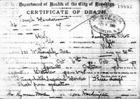 | |
| October 8, 1890 | The Brooklyn Daily Eagle published a notice of Joseph Henderson’s death on Wednesday, announcing that funeral services would be held at his late residence, 633 Willoughby Avenue, on Thursday evening at 8:00 p.m. The notice stated that New York and Sandy Hook pilots were respectfully invited to attend and requested that newspapers in Charleston and New Orleans copy the announcement. Source: Brooklyn Daily Eagle, October 8, 1890, Vol. 50, No. 279, p. 5. | ||
| October 9, 1890 | The Evening World published an extensive account of Joseph Henderson’s death under the headline:
PILOT HENDERSON DEAD The newspaper reported that the flag at the New York and Sandy Hook pilots’ building at 20 State Street was lowered to half-mast in honor of Captain Joseph Henderson, one of the oldest and best-known pilots in the service. Henderson died at his home at 633 Willoughby Avenue in Brooklyn at the age of 64. The article noted that Henderson had been a pilot since 1845 and had spent his career with the Sandy Hook station, where he was regarded as one of its most skilled and efficient pilots. During the Civil War, he served as a pilot aboard the transports Arago and Fulton, operating between Newport News and Port Royal. At the time of his death, Henderson was attached to the pilot boat America, No. 21. He had been aboard the vessel during the great Blizzard of 1888, when the pilot boat rode out the storm approximately ninety miles east of Sandy Hook near Shinnecock Light. Henderson was a member of the Sandy Hook Pilots’ Benevolent Association and Hillgrove Lodge No. 540, F. & A.M., of Brooklyn. The newspaper also reported that he had invested in Brooklyn real estate and accumulated a fortune estimated at $100,000. He was survived by his wife, three sons, and three daughters. A delegation of his fellow pilots was expected to attend his funeral. Source: “Pilot Henderson Dead,” The Evening World, Extra 2 O’Clock edition, p. 1. |
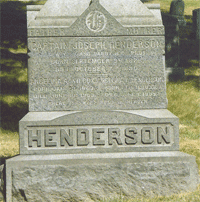 Green-Wood Cemetery 1826 - 1890 |
|
| October 9, 1890 | On Thursday, the Brooklyn Daily Eagle newspaper carried a front-page article titled: "Captain Joseph Henderson Dead - An Old Pilot and a Long Resident of Brooklyn Passes Away".Source: Brooklyn Daily Eagle, Thursday, October 9, 1890, Vol 50, No 280, pg. 1. | ||
| October 9, 1890 |
The Rev. Dr. Morrison of St. Matthew’s
Episcopal Church conducted the funeral services at the family home on
633 Willoughby Avenue. Source: Brooklyn Daily Eagle, Thursday, October 9, 1890, Vol 50, No 280, pg. 1. |
||
| October 10, 1890 | JJoseph Henderson was buried at Green-Wood Cemetery, located at 500 25th Street in Brooklyn, New York. He was interred in the Henderson family lot, No. 13244, in Section 88. Source: Green-Wood Cemetery records. | ||
| October 12, 1890 | Joseph Henderson’s death notice appeared in the New Orleans Daily Picayune, reflecting his connections to the South despite his many years in New York. The notice read: “DIED: HENDERSON—In New York City, on Tuesday, Oct. 7, 1890, Captain Joseph Henderson, New York and Sandy Hook pilot, aged 64 years, 29 days.” Source: New Orleans Daily Picayune, transcribed in the NYC-ROOTS Mailing List archives. |
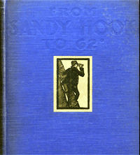 Charles Edward Russell |
|
| October 15, 1890 | The Probate of the last Will and Testament of Joseph Henderson was signed by his wife and 6 children. Source: New York, Kings County Estate Files, 1866-1923 for Joseph Henderson. | ||
| 1929 | Charles Edward Russell published From Sandy Hook to 62°, a history of the Sandy Hook pilots that includes several references to Joseph Henderson and his career as a pilot. Source: Charles Edward Russell, From Sandy Hook to 62° (New York: The Century Co.), pp. 148–153. | ||
| Easter 1932 | In the 1932 Easter church bulletin, a Communion Service was dedicated in memory of Captain Joseph Henderson. Source: Easter 1932 church bulletin, Church of St. Luke and St. Matthew. |


Last updated: August 30, 2026

| The text of this page is available for modification and reuse under the terms of the Creative Commons Attribution-Sharealike 3.0 Unported License and the GNU Free Documentation License (unversioned, with no invariant sections, front-cover texts, or back-cover texts). |